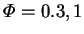

Markham and Rosenberger (1980) numerically solved the non-Boussinesq equations for a Stefan diffusion tube with a length equal to five times its diameter, for  and 5. For the two lower mass transfer rates, the mass average velocity was found to have an `entrance length' of 0.5 and 1 tube diameters, respectively. No fully developed region was predicted at the highest mass transfer rate.
Markham and Rosenberger's results confirmed that the gas must circulate in the Stefan diffusion tube; up (parallel to the primary direction of the vapour) along the axis and down near the walls. In their study, the vapour was heavier than the gas, and gravity was included. Although the one-dimensional `Rayleigh-Bénard' problem is convectively stable, the radial composition variations did lead to buoyancy forces affecting the flow field: the mass average velocity was reduced, most markedly along the axis.
They also pointed out that the greatest deviations from the one-dimensional solution must be expected at intermediate values of the mass transfer rate factor, a quantity which they called the `Peclet number' (which is an appropriate name for it in this problem). At low mass transfer rates, diffusion reduces radial concentration gradients, while at very high mass transfer rates, viscous effects should be confined to thin layers near the walls. The same conclusion applies to buoyancy-effects, except that these could also be more important for shorter or wider tubes.
As far as overall vapour transfer rates are concerned, the error of the one-dimensional prediction was zero to within the accuracy of the numerical solutions (1%).